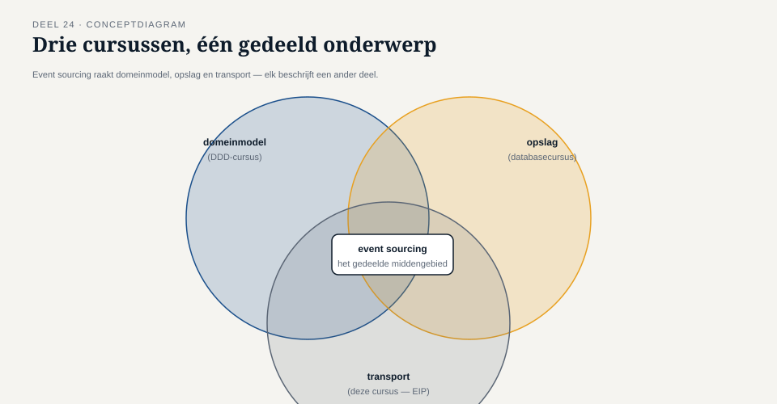

Deel 24 — Event sourcing als drager
Reader · Ductus-cursus Enterprise Integration Patterns · niveau 3 (expert) · deel 24 van 30
24.0 Een vraag die niet bij deze cursus hoort
Tijdens de bouw van de invaarketen stelde een ontwikkelaar Caspar een vraag die, hoe terecht ook, buiten de scope van deze cursus valt: "Als we toch alle events van een deelnemer permanent bewaren, kunnen we dan niet gewoon de hele huidige toestand van die deelnemer berekenen door alle events opnieuw af te spelen, in plaats van een aparte, actuele databasetabel bij te houden?"
Het antwoord is ja — dat is precies event sourcing als architectuurpatroon: in plaats van de huidige toestand op te slaan en bij elke wijziging te overschrijven, wordt alleen de reeks events opgeslagen, en wordt de huidige toestand afgeleid door die events opnieuw toe te passen. Dit is een krachtig en veelgebruikt patroon — en het is ook precies het onderwerp van twee andere cursussen in deze familie: de DDD-cursus behandelt hoe event sourcing het domeinmodel vormgeeft (aggregates, domain events, hoe een aggregate zijn eigen geschiedenis reconstrueert), en de databasecursus behandelt het technisch als opslagpatroon (event store-ontwerp, snapshotting voor prestatie, query-modellen).
Deze cursus behandelt geen van beide. Wat deze cursus wél behandelt — en wat de andere twee cursussen bewust niet behandelen, om overlap te vermijden — is de vraag die aan beide voorafgaat: hoe reizen die events, als berichten, betrouwbaar door een keten van systemen, zodat elk systeem dat ze nodig heeft, ze op tijd, in de juiste volgorde en zonder verlies ontvangt? Dat is de transportvraag, en die valt volledig binnen het domein van Enterprise Integration Patterns.

Kernzin 24 van de cursus: event sourcing is één architectuurpatroon met drie aspecten — hoe het domein zijn geschiedenis modelleert, hoe die geschiedenis wordt opgeslagen, en hoe die geschiedenis als berichten door een keten reist. Deze cursus behandelt uitsluitend het derde.
24.1 Waar de transportvraag begint
De transportvraag wordt concreet zodra een event-sourced systeem — zoals de invaaradministratie die op event sourcing wordt gebouwd — zijn events niet alleen intern gebruikt om zijn eigen toestand te reconstrueren, maar ook naar buiten toe publiceert, zodat andere systemen (het Nabestaandenloket, de risicomanagement-rapportage, straks een toekomstig deelnemersportaal) erop kunnen reageren of erop kunnen bouwen.
Dit introduceert een onderscheid dat, hoewel het buiten deze cursus in de DDD-cursus dieper wordt uitgewerkt, hier relevant is voor het transportontwerp: het verschil tussen een intern domain event (gebruikt binnen één aggregate om zijn eigen geschiedenis te reconstrueren, met een structuur die optimaal is voor dat interne doel) en een extern gepubliceerd integratie-event (bedoeld voor consumptie door andere systemen, met een structuur die stabiel en begrijpelijk moet zijn voor partijen die het interne domeinmodel niet kennen).
Deze twee zijn zelden identiek, en het is een veelgemaakte fout — bij Meridiaan aanvankelijk ook gemaakt — om ze te verwarren: het interne domain event van de invaaradministratie bevat velden en structuren die specifiek zijn afgestemd op hoe de aggregate zijn eigen toestand reconstrueert (bijvoorbeeld tussenstappen van een berekening die voor externe partijen betekenisloos zijn), terwijl het externe integratie-event een stabiel, zelfstandig interpreteerbaar contract moet zijn — precies het onderwerp van deel 20 (contractbeheer), nu toegepast op de grens tussen intern domeinmodel en extern transport.
Vuistregel: publiceer nooit het interne domain event rechtstreeks als extern integratie-event — vertaal expliciet, net als bij elke andere translator (deel 5), ook als beide "toevallig" op hetzelfde moment ontstaan.
24.2 De relatie met eerdere patronen uit deze cursus
Event sourcing als drager is geen nieuw patroon binnen deze cursus — het is een specifieke, strengere toepassing van patronen die al eerder zijn behandeld, nu gecombineerd op een manier die de eisen van deel 23 (onveranderlijkheid, herleidbare volgorde, herspeelbaarheid) technisch waarmaakt.
De translator (deel 5) en messaging mapper (deel 14) zijn hier het mechanisme dat interne domain events omzet naar externe integratie-events — precies de vertaalslag uit 24.1.
Idempotentie (deel 7) wordt hier bijzonder streng, omdat elk intern domain event, bij het opnieuw afspelen van de geschiedenis (bijvoorbeeld bij het herbouwen van een projectie of het herstellen na een storing), exact hetzelfde effect moet hebben als de eerste keer — niet slechts "geen schadelijk dubbel effect" zoals in niveau 1, maar volledige, herhaalbare determinisme.
De outbox-pattern (deel 19) is hier vaak zelfs het native mechanisme in plaats van een aanvullend patroon: bij een goed ontworpen event-sourced systeem ís de opslag van het domain event zelf al de "database transactie", en het publiceren van het corresponderende integratie-event kan direct op die opslag worden gebaseerd — de outbox-tabel en de event store vallen in de praktijk vaak (bijna) samen.
24.3 Waar deze cursus stopt
Om de afbakening met de DDD- en databasecursus scherp te houden, is het nuttig expliciet te noemen wat niet in deze cursus wordt behandeld, ook al raakt het aan hetzelfde onderwerp:
- Hoe een aggregate zijn interne staat reconstrueert uit zijn eigen event-geschiedenis (DDD-cursus).
- Wanneer en hoe een aggregate-grens wordt getrokken, en welke events daarbinnen vallen (DDD-cursus).
- Het technisch ontwerp van een event store: indexering, snapshotting voor prestatie bij lange geschiedenissen, opslagformaat (databasecursus).
- Query-modellen die uit event-geschiedenis worden afgeleid, zoals CQRS-read-models (databasecursus, met raakvlak DDD-cursus).
Wat deze cursus wél biedt, en de andere twee bewust niet: het antwoord op de vraag die Caspar's ontwikkelaar feitelijk stelde — niet "hoe bouw ik event sourcing", maar "hoe zorg ik dat de events die uit dat systeem komen, betrouwbaar, in de juiste volgorde, en zonder verlies bij elke partij aankomen die ze nodig heeft" — precies de kern van deel 7, 8, 16 en 23, nu toegepast op de specifieke situatie van een event-sourced bron.
Samenvatting van deel 24
- Event sourcing heeft drie aspecten: domeinmodellering (DDD-cursus), opslag (databasecursus), en transport (deze cursus) — deze cursus behandelt uitsluitend het laatste.
- Intern domain event en extern integratie-event zijn zelden identiek en moeten expliciet worden vertaald, net als bij elke andere translator.
- Idempotentie wordt hier strenger (volledige determinisme bij herafspelen), en het outbox-pattern valt vaak (bijna) samen met de event store zelf.
- Deze cursus behandelt uitdrukkelijk niet: aggregate-modellering, event store-technisch ontwerp, of query-modellen — dat is het domein van de DDD- en databasecursus.
Vooruitblik
Deel 25 bouwt hierop voort met complexe eventketens: het ontwerp van de event backbone specifiek voor invaren en datakwaliteit, waar meerdere event-sourced en niet-event-sourced systemen samen één auditeerbare keten moeten vormen.